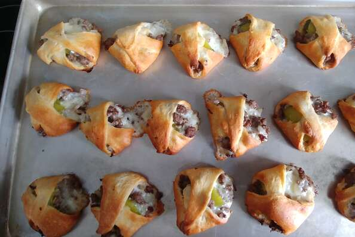

Dirty Diapers

Description
Tastes like mini-slider cheeseburgers.
Ingredients
- 1 pound ground beef
- 1 small onion, finely chopped
- 1 (10 ounce) can refrigerated crescent roll dough
- 8 slices cheddar cheese
- 32 slices dill pickle
Directions
- Preheat oven to 350 degrees
- Place ground beef in a skillet over medium-high heat. Cook, stirring to crumble, until no longer pink. Add the onion to the skillet; cook and stir until tender. Drain off grease.
- Unroll the crescent roll dough on a clean surface. Separate the triangles and then cut each triangle in half diagonally to make two smaller triangles. Stack the slices of cheese and cut diagonally into 4 triangles. Place one triangle of cheese onto each triangle of dough. Spoon about a tablespoon of ground beef over the cheese and then top with a slice of pickle. Fold the points of the dough towards the center like a diaper and place on a baking sheet.
- Bake for 10 to 15 minutes in the preheated oven, until golden brown.
Home
Back to top
Chicken Baseballs
Screamin' Stuffed Jalapeno Peppers